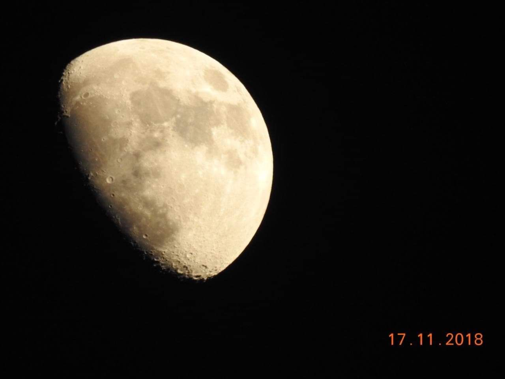

ABOUT ME
Hello everyone. Welcome to my personal page, if you are here. it means you decided to check out my
RESUME! (I hope so...) and of course to know more about me.
I'm Valeria, but i like to be called 'Vale' better.
I majored in Applied Maths & Computer Science at FES-Acatlán,UNAM, the most prestigius university in
Mexico.
When I was in 4th semester in college, I took databases and it was the best course I have ever took,
that's why I decided to pursue a certified in DataBase Administration since it's my passion.
EDUCATION
August 2013 - June 2015 | Quick Learning (English Academy)
August 2012 - June 2015 | Colegio de Ciencias y Humanidades
August 2015 - June 2021 | Facultad de Estudio Superiores
HOBBIES
One of the things that I love is to go to the cinema, and watch a lot of movies (obviously). I also enjoy astronomy, that's is why I like to watch stars, planets and the moon in my free time. Below the are some pictures I took of the moon in 'La Noche de las Estrellas 2018'.
- 
-